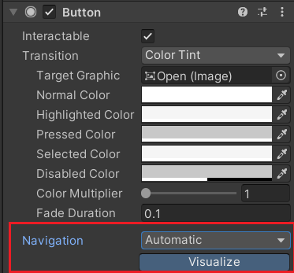
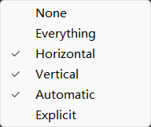
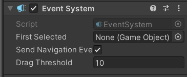

效果预览
Navigation,EventSystem
Navigation:可被选中的组件中的 Navigation 属性 例如：Button

每一个Button及所有可被选中的UI都有Navigation(按键导航),被选中的UI可以通过键盘来进行UI选取操作。
导航有六种，五种unity默认导航，一种自定义导航:
None:无导航，不可通过键盘来切换选取的UI
Everything:没用过，应该和Automatic类似
Horizontal:水平导航，也就是X轴，只能水平方向导航
Vertical:垂直导航，也就是Y轴，只能垂直方向导航
Automatic:自动导航，由unity引擎自动生成导航路径
Explicit:自定义导航，可以自选各个方向导航到哪个UI

EventSystem:EventSystem中含有多种关于被选中UI的API，同时也可以在EventSystem中设置进入场景时第一个被选中的UI

版权：https://doyounatureq.github.io/_Copyright：https://doyounatureq.github.io